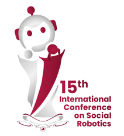
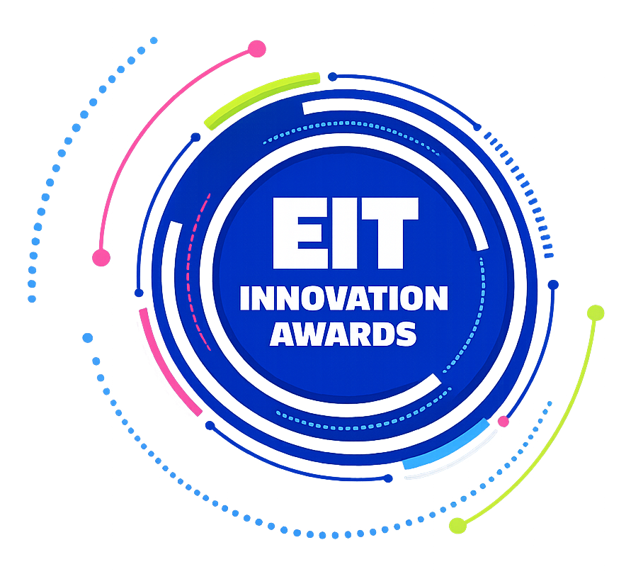
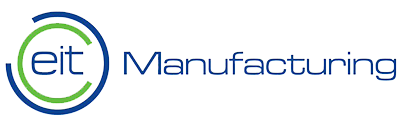
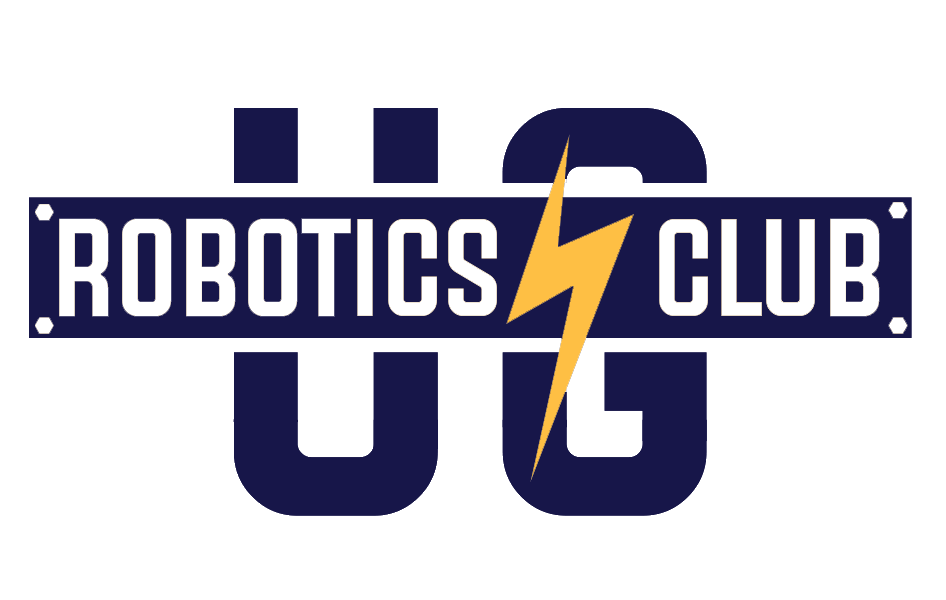
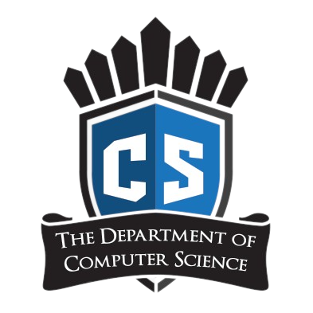

Watch RSC in Action
Demonstrations of the Robot Study Companion across prototypes and deployments.
▶ View YouTube Demo Playlist
A robotic study companion (RSC) is a type of social robot designed to interact with [university] students in a human-centric way and to operate in study environments alongside them. RSCs can take on various forms, from humanoid to animal-like or even abstract, but they all share the goal of engaging students in an interpersonal manner. This involves communicating and coordinating their behaviour with students through various modalities, such as verbal, nonverbal, or affective means, with the aim of providing personalised support, feedback, and motivation for students to enhance their academic performance and learning outcomes.
~ Farnaz Baksh, 2023
Demonstrations of the Robot Study Companion across prototypes and deployments.
▶ View YouTube Demo Playlist
Robot Design Online Competition
🏅Special Mention

Changemaker Category
🥉3rd Prize



Explore how the Robot Study Companion is shaping the future of social-educational robots through publications, presentations, and student-led theses. ➡️ Click here